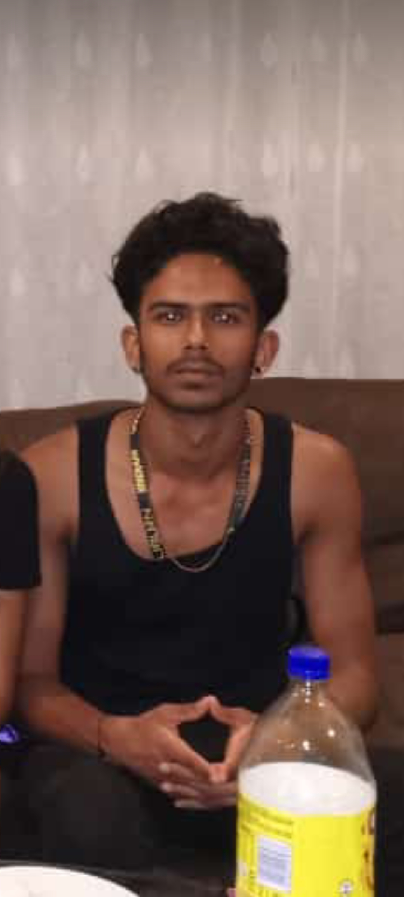

About Us
Brandon Goncalves
Brandon Goncalves
The purpose behind CTU-Buddy is to provide an enhanced learning experience for students at CTU Training Solutions. This is an educational system that is made to be immersive for students studying at CTU Training Solutions and it is meant to enhance the lives for the students. Not only are students able to post into the system about questions may have, it helps enhance the learning experience as people are able to answer one another via this website.
Students are able to ask questions related to their studies and peers in their class are able to respond to these questions being asked, which is beneficial as all students in a class are able to learn from one another and it helps better the understanding of a module they may be currently busy with. This helps all learner work with another, which is extremely valuable to each of the students as in future they will be required to speak to colleagues about work-related topics. This also helps with engagement and it ensures that students are able to communicate with one another, which is amazing as it adds to the CTU home feeling.
The vision of CTU-Buddy is to aid students in their work. We intend on doing this by creating an atmosphere that is open for the students studying the course to be able to pose questions based on their studies. This interaction helps a lot of learners because a lot of learners find it easier when they can speak to their peers about the work they are doing. This can take students a very long way in their studies as it will really be beneficial for them to ask each other questions, not only testing their peers knowledge, but it also helps the students at CTU Training Solutions learn from one another, which is ultimately an even greater experience for all students in the institution.
Additionally, with CTU-Buddy we wish to create for a more engaging experience at CTU Training Solutions. We urge students to interact with one another, because in the industry we could never know who we may meet, not only may we bump into another student from the school, we could also get jobs and even meet our next employer from our school. This is an amazing level of engagement and interaction as it will be beneficial for all learners to be able to be able to interact with one another and get to know one another, this interaction is great for students as it will really bond all students to create the one big CTU family that has been created.
The mission of CTU-Buddy is to allow students to learn from one another. The students are able to learn from one another by asking each other questions and so learners are able to see their timetables easily. CTU-Buddy is meant to be a student-friendly website for students to interact with one another, to learn from one another and is just meant to be easily accessible for students to get their required information such as their timetables.
Terushan Moodley is the creator of the Home page and the Share resources page. He designed the pages and added all functionality to the Home and Share resources pages. He will be adding functionality to the Home pages including the Share Resources pages where you are able to send your information to the institution. You will be able to read about CTU-Buddy and you will be able to share your information to CTU and to the creators of this website.
Enrique Woodington is the creator of the Discussion and the Contact Us pages. He is adding all functionality to these pages by including the Discussion students can post their questions on and he is also adding the functionality to the Contact Us pages, where you can directly contact us and CTU at anytime. You will be able to Discuss and pose questions and you will be able to contact us with the pages he has created.
Brandon Goncalves is the creator of the Timetable and About Us page that you are currently reading. He will be adding the functionality to the timetable pages, whereby you will be able to view, print and download your timetable as a pdf, he is also adding different kind of functionality to the About Us pages and will be designing the entire designs and features that the Timetable and About Us pages has to offer.
Terushan Moodley |
|
|---|---|
Lead Web Developer |
Home Page CreatorShare Resources Page Creator |
Enrique Woodington
|
|
|---|---|
Lead Web Developer |
Discussion Page CreatorContact Us Page Creator |
Brandon Goncalves |
|
|---|---|
Lead Web Developer |
Timetable Page CreatorAbout Us Page Creator |